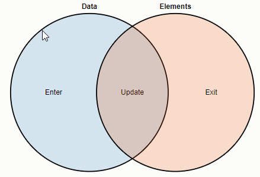

Joins and Transitions are related to me because, in the tutorial where mike explains Select, transitions did not work right away with Joins. So I am joining these concepts in one page as I study them. Here are the links explaining Thinking in Join and Working with transitions. Below are the list of examples that Mike uses in the explanations. I will be studying them and trying them out... He has explained about Nested Selections, Object Constancy, Path Transitions
Some interesting Blocks
queue colorBrewer Gist API latency brushable BarBlocks on Axis styling
Axis styling 1 Axis Styling 2What is a Join really?
Data points joined to existing elements produce the update (inner) selection. Leftover unbound data produce the enter selection (left), which represents missing elements. Likewise, any remaining unbound elements produce the exit selection (right), which represents elements to be removed. We will see this in action by creating a table of numbers.
Interesting part starts once the shapes are introduced. Here is one way of transitioning shapes
circle.enter().append("circle")
.attr("r", 0)
.transition()
.attr("r", 2.5);
Likewise, to shrink-out:
circle.exit().transition()
.attr("r", 0)
.remove();
Creating transition seems to be very straight forward based on the code below. The transition is attached to the select, and the function is invoked. Transitions have a four-phase life cycle:
Similar to how data is bound to an element’s __data__ property, transitions are bound to a __transition__ property. When a transition is first scheduled on an element, this property is created; when the last scheduled transition ends, this property is likewise deleted. Inspecting this property in the console can be useful to debug which transitions are scheduled to run on which elements, as well as to inspect computed tweens and transition timing parameters.
Transitions Are per-Element and ExclusiveDifferent elements can have different delays and duration, and even different easing and tweens. Additionally, transition events are dispatched separately for each element. When you receive an end event for a given element, its transition has ended, but other transitions may still be running on other elements
d3.select("body")
.style("color", "green") // make the body green
.transition().delay(750)
.style("color", "red");